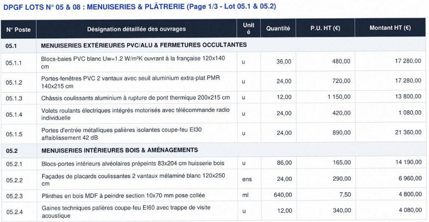
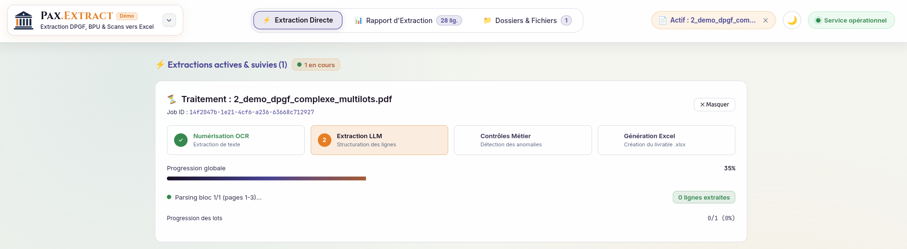
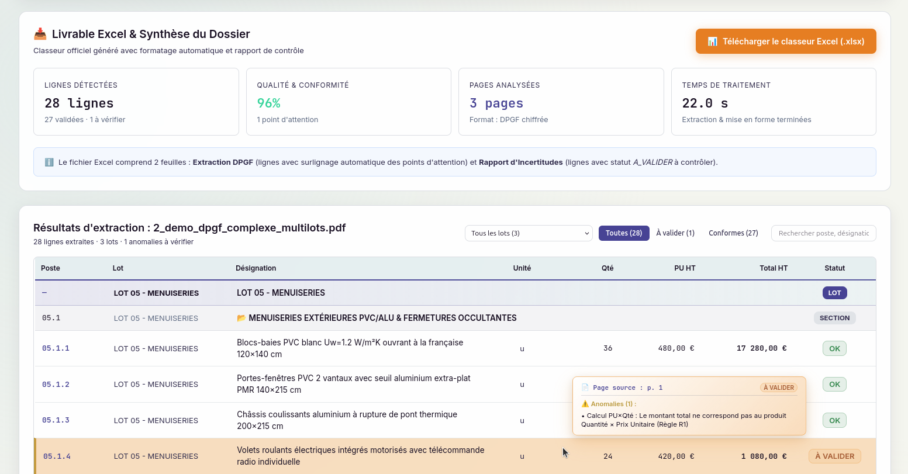
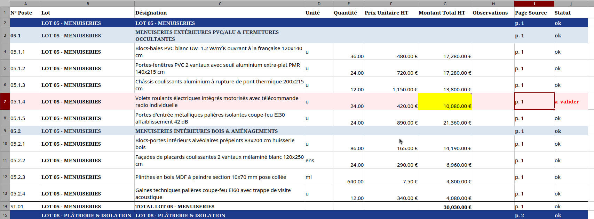

Vos DPGF PDF et Scans.
Notre IA. Votre Excel prêt à travailler.
Pax.Extract extrait les lignes, quantités, unités et montants de vos DPGF, BPU, DQE, détecte les anomalies, crée un Excel exploitable dans votre flux de travail existant et vous permet de retrouver chaque donnée dans son document source.
Vous avez un DPGF sous la main ? Commencez avec celui-là. 1–3 dossiers · 500 pages max · premier livrable sous 48 h ouvrées · 490 € net déduits de la mise en production de votre outil métier.
Ce que Pax.Extract fait à votre place
Extraire, signaler, retrouver et contrôler — sans remplacer votre expertise métier.
Vos DPGF, BPU et DQE PDF et Scans deviennent des fichiers Excel structurés, sans ressaisie ligne par ligne.
Les prix absents, unités ambiguës, incohérences et données douteuses sont signalés pour vérification.
Chaque donnée extraite est accompagnée de sa source lorsqu’elle est disponible et identifiable, pour vous permettre de vérifier le document original.
L’IA prépare le travail. L’économiste garde la décision. Pax.Extract signale les points à vérifier au lieu de décider à votre place.
Il fait
Lire, structurer, signaler, tracer et préparer vos données documentaires.
Il ne fait pas
Décider à votre place, réaliser des métrés complexes ou remplacer votre logiciel de chiffrage.
Votre PDF entre. Un Excel exploitable sort.
Pax.Extract transforme le document brut en donnée structurée, détecte les anomalies et vous permet de retrouver chaque donnée dans son document source.
Document Source (PDF)

DPGF ou BPU multi-lots complexe scanné/vectoriel. Les données sont extraites et structurées à partir du document source. Les éléments incertains sont signalés pour vérification.
Pipeline & Extraction IA

Numérisation OCR haute précision et extraction sémantique LLM bloc par bloc avec suivi de progression lot par lot en direct.
Audit & Détection d'Anomalies

Contrôle arithmétique automatique (PU × Quantité), détection des points de vigilance et pointage direct de la page source.
Excel Exploitable & Structuré

Classeur .xlsx prêt pour le chiffrage : lignes normalisées, statuts de contrôle (« ok », « a_valider ») et surlignage couleur.
Captures réelles du moteur Pax.Extract. Les performances réelles sont mesurées sur vos propres dossiers pendant le pilote.
Commencez avec un seul dossier.
Vous n’avez pas besoin de préparer un projet spécial pour tester Pax.Extract.
Envoyez
Votre premier DPGF, BPU ou DQE réel (*).
Nous traitons
Extraction, structuration, anomalies et traçabilité.
Vous vérifiez
Premier livrable sous 48 h ouvrées.
Vous décidez
Jusqu’à 3 dossiers au total pendant 30 jours.
Une preuve réelle avant de passer en production
Commencez avec un dossier. Mesurez le résultat. Testez jusqu’à 3 dossiers. Puis décidez.
1. Pilote Flash — 490 € net
2. Pax.Extract — Mise en production
3. La suite Pax.Fabrica
🛡️ Une solution clé en main, souveraine et transparente
- Zéro installation : Pax.Fabrica gère l'hébergement, la sécurité et la maintenance. Pas de serveur à acheter · Pas de logiciel à installer · Pas de clé API à gérer.
- 100 % français & sécurisé : serveurs (Scaleway) et IA (Mistral) hébergés en France, conformes aux exigences européennes sur le secret des affaires.
- Transparence totale : socle technique reposant exclusivement sur des logiciels open source (voir vue technique détaillée).
Une plateforme qui évolue avec vos besoins.
Vous commencez par l’extraction. Les autres briques arrivent quand elles ont une valeur concrète pour votre flux de travail.
Pax.Extract
Extraire
DisponiblePax.Control
Vérifier
En préparationPax.Vision
Voir
R&DPax.Memory
Trouver
ExtensionPax.Agent
Agir
ExtensionPax.Extract — Extraction structurée & traçabilité documentaire
Disponible- • Ingestion universelle : Traitement des fichiers PDF et scans de pièces quantitatives et financières : DPGF, BPU, DQE.
- • Export Excel natif : Restitution structurée avec formules de calcul prêtes à l'emploi.
- • Contrôle automatisé : Détection des anomalies de calcul, totaux erronés et doublons.
- • Pointage & traçabilité : Traçabilité ligne par ligne vers la page source exacte dans le PDF.
Pax.Control — Contrôle croisé CCTP ↔ DPGF & analyse des offres
En préparation- • Cohérence documentaire : Contrôle de cohérence croisée CCTP ↔ DPGF (postes oubliés, incohérences de libellés).
- • Dépouillement des offres : Dépouillement & comparateur multi-offres entreprises (analyse en phase ACT).
- • Détection des anomalies : Détection immédiate des écarts de prix suspects et postes sous-évalués.
- • Rapports d'analyse : Fiches de synthèse claires prêtes pour vos choix d'attribution.
Pax.Vision — Analyse visuelle de plans & pré-métrés assistés
R&D- • Comptage automatique : Comptage d'équipements sur plans (portes, sanitaires, prises).
- • Rapprochement avec le DPGF : Rapprochement direct entre les quantités sur plan et quantités DPGF.
- • Contrôle rapide : Vérification visuelle immédiate des métrés avant validation.
- • Gain de temps : Automatisation des tâches de repérage et de comptage répétitif.
Pax.Memory — Discutez avec vos archives & capitalisez votre historique
Extension- • Recherche intelligente : Recherche rapide dans les archives du cabinet (anciens CCTP, ratios de prix).
- • Trouver des clauses : Trouver des clauses techniques ou retours d'expériences passés en quelques secondes.
- • Historique de ratios : Comparaison et repères sur les coûts réels de vos chantiers passés.
- • Capitalisation : Vos archives deviennent un référentiel consultable directement en langage clair.
Pax.Agent — Automatisation de vos flux & connexion à vos outils métier
Extension- • Connexion à votre espace : Connexion directe avec vos outils de travail (dossiers partagés, logiciels de chiffrage, GED).
- • Automatisation sur-mesure : Automatisation d'actions répétitives (préparer vos imports, structurer les données).
- • Génération documentaire : Génération automatique de comptes-rendus et fiches récapitulatives.
- • Sans friction : Conçu pour s'adapter à vos habitudes sans perturber vos logiciels actuels.
Combien vous coûte réellement la ressaisie ?
Estimez la capacité de travail potentiellement libérée. Le gain réel est mesuré lors de votre pilote.
* Note : Estimation indicative avant pilote. Le gain réel est mesuré sur vos propres dossiers.
Les questions avant de tester.
Non. Le pilote démarre avec un seul dossier. Vous pouvez ensuite tester jusqu’à 3 dossiers au total, dans la limite de 500 pages et pendant 30 jours.
Les données incertaines ou incohérentes sont signalées. Chaque extraction reste traçable vers sa source afin que vous puissiez vérifier avant utilisation.
Le pilote est une prestation de preuve sur vos dossiers. Si vous passez ensuite en production, les 490 € net sont intégralement déduits de la mise en production de votre outil métier (règlement avec 50 % d'acompte à la commande, solde à la livraison).
Non. L’objectif de l’offre en production est un espace web clé en main, sans serveur à acheter, sans logiciel à installer et sans clé API à configurer.
Vous avez un DPGF sous la main ?
Commencez avec votre premier dossier. Premier livrable sous 48 h ouvrées.
Lancer votre pilote — 490 € net → 1–3 dossiers · 500 pages max · 30 jours · 490 € net déduits de la mise en production de votre outil métier